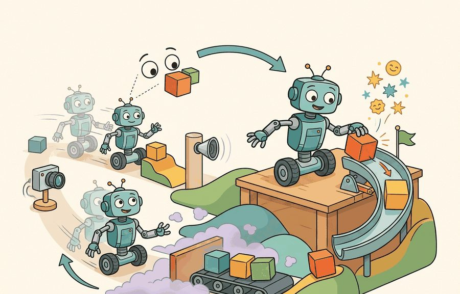
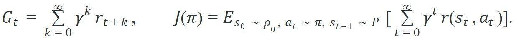
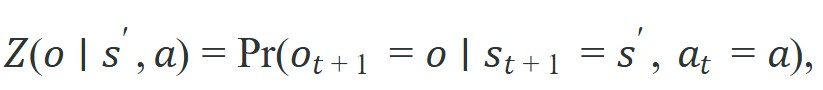
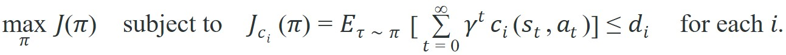

"Interfaces matter because the agent can only act on what the experiment lets it see and do."
A Careful Control Loop

This section assumes you are comfortable with the feedback-loop intuition introduced in section 1.1 and the distinction between static and embodied settings from section 1.2. The MDP and POMDP formalisms defined here are extended in section 2.7, which treats the observation function in depth, and in section 26.3, which applies hierarchical action spaces to long-horizon manipulation tasks. The constrained MDP structure recurs throughout Part 9 alongside safety-critical locomotion and dexterous manipulation.
A warehouse robot misses a shelf edge by three centimeters, clips a box, and triggers a cascade of faults. Post-mortem analysis almost always traces back to the same root cause: the team optimized the wrong thing because they wrote down the wrong problem. Modern embodied AI is exploding precisely because researchers finally have a shared language for specifying problems exactly, before any algorithm is chosen. Six terms, agent, environment, observation, action, reward, constraint, form a formal contract called an MDP. Get one element wrong and every downstream metric measures a different problem than the one you intended. By the end of this section you will be able to write down that contract for any embodied task, spot the partial-observability traps that catch most newcomers, and extend the tuple to handle the safety limits real systems cannot afford to violate. Figure 1.3A shows these six terms made physical: what the agent senses, what it commands, how the world responds, what it is graded on, and the boundary it must not cross.
Six words, written down before a single line of algorithm exists, decide whether a robot learns the task you meant or quietly optimizes a different one: agent, environment, observation, action, reward, constraint. Figure 1.3 sketches the whole arrangement as a closed loop before we formalize it: the agent receives evidence, makes a decision, and inherits the consequence as its next input. The agent is the decision-maker itself: the policy that maps what it has seen to what it does next; the environment is everything outside that policy, including the physics, the objects, and any other agents, that determines how the world responds. The base contract for a fully observed embodied task is a Markov decision process, the tuple $(\mathcal{S},\mathcal{A},P,r,\gamma,\rho_0)$. Here $\mathcal{S}$ is the state space (every configuration the world can be in: joint angles, object poses, contact state), $\mathcal{A}$ is the action space, $P(s' \mid s,a)$ is the transition kernel giving the probability of landing in state $s'$ after taking action $a$ in state $s$, $r(s,a)$ is the scalar reward, $\gamma \in [0,1)$ is the discount factor, and $\rho_0$ is the initial-state distribution. A policy $\pi(a \mid s)$ closes the loop. The Markov property is the load-bearing assumption: $s_t$ summarizes all history relevant to the future, so $P$ and $r$ may condition on $s_t$ alone.
The objective is the discounted return, and the policy is graded by its expected value:

When setting the discount factor $\gamma$, start with $\gamma = 0.99$ for tasks with horizons up to a few hundred steps and drop to $\gamma = 0.95$ or lower if the policy stalls or reward gradients vanish during early training. A common trap is copying $\gamma = 0.999$ from a paper that used 10,000-step episodes into a 200-step task: the effective horizon $1/(1-\gamma)$ becomes 1,000 steps, swamping the actual episode with discounted future noise and slowing convergence. In Isaac Lab and similar GPU-parallelized simulators, verify that your chosen $\gamma$ matches the environment's decimation parameter (the ratio of physics substeps to policy steps), because a finer physics timestep multiplies the effective horizon even when episode length in wall-clock seconds appears unchanged.
Two distinctions in this objective are routinely conflated and cost teams weeks. Reward $r_t$ is a per-step quantity; return $G_t$ is the discounted sum the policy actually optimizes. A reward that looks correct step by step can induce a return that rewards stalling, oscillating, or any behavior the discount happens to favor. And the expectation is taken over the policy-induced trajectory distribution, so changing $\pi$ changes the states on which $r$ is sampled, the coupling developed in Section 1.1.
That clean MDP contract rests on one assumption that no physical robot ever satisfies, and dropping it forces a richer tuple.
The MDP assumes the agent sees $s_t$. A robot never does. It sees pixels, joint encoders, force readings, and a language instruction, none of which recover full object pose, mass, friction, or another agent's intent. The honest contract is therefore a partially observable MDP (POMDP), the tuple $(\mathcal{S},\mathcal{A},\mathcal{O},P,Z,r,\gamma)$, which adds an observation space $\mathcal{O}$ and an observation function

the probability of receiving observation $o$ after action $a$ lands the world in state $s'$. Because $Z$ is generally many-to-one and noisy, the observation $o_t$ is a lossy projection of the state, not the state itself.
Why this matters on physical hardware: every real sensor discards information. A depth camera sees reflected photons, not object mass or friction coefficient. A joint encoder measures shaft angle, not contact force or link flex. Network latency and analog-to-digital converter (ADC) quantization add noise after the sensor captures the physical signal. Even a perfect sensor would not help, because a robot's compute budget limits how many signals it can read and process within one control cycle. So $Z$ is unavoidably many-to-one: distinct states (object poses that differ by a millimeter, surfaces with different friction) emit observations that are statistically indistinguishable. A policy that ignores this conflates states it cannot separate, and it behaves suboptimally in exactly the situations where precision matters most. A robot that assumes its sensor reading is the world is not perceiving reality; it is perceiving a rumor about reality.
How $Z$ works mechanically: think of it as a generative sensor model. Given the true next state $s'$ and the last action $a$, $Z$ first projects $s'$ through a forward sensor model (ray-casting for lidar, a projection matrix for a camera). It then adds noise whose parameters match the physical sensor: Gaussian additive noise for encoders, structured dropout for depth cameras at reflective surfaces. The action $a$ enters because actuator motion during the sensing window can blur or shift the reading. Probabilistic filters (Kalman, particle) implement exactly this generative view. They run $Z$ in reverse, weighting hypothesized states by how well each one explains the observation the agent actually received.
A POMDP policy cannot be Markov in $o_t$; it must act on a sufficient statistic of history, the belief state $b_t(s) = \Pr(s_t = s \mid o_{0:t}, a_{0:t-1})$, which is updated by Bayes' rule through $Z$ and $P$. The belief MDP over $b_t$ is the formally correct object, and it is why memory, filtering, and recurrent or transformer policies appear the moment a task is genuinely partially observed. In practice, partial observation multiplies the information a policy must carry: a fully observed MDP policy needs to encode 1 timestep of input to act optimally, while the same task as a POMDP may require 50 or more past observations before the belief is sharp enough to distinguish two confusable states.
Think of the belief state as a chef tasting a sauce she did not watch being made. After one small taste she holds a wide distribution of possibilities: too much salt, maybe garlic, possibly thyme. Each additional taste narrows that distribution. After five deliberate tastes from different parts of the pot she can act with confidence, not because any single observation told her the full recipe, but because the accumulated evidence collapsed the uncertainty. A robot updating its belief state through sensor readings is doing exactly the same thing: each observation is a taste, Bayes' rule is the narrowing, and the resulting belief is the sharpened guess about the true state of the world that the policy finally acts on.
A common misconception is that the Markov property means the agent must remember the past, and conclude that adding memory (an RNN, a transformer context window) turns an MDP into a POMDP. The causality runs the other way. The Markov property says the true state $s_t$ already summarizes all history relevant to the future, so a policy that sees $s_t$ needs no memory at all. Memory becomes necessary only because the agent never sees $s_t$: it sees a lossy observation $o_t$, and must accumulate a history of observations to reconstruct enough information about $s_t$ to act well. Adding a recurrent layer does not change the underlying formalism from MDP to POMDP; it is a practical response to a POMDP that already existed the moment the sensor discarded information. The correct mental model is: the environment is a POMDP by the physics of sensing, and memory in the policy is the agent's attempt to approximate the belief state that the POMDP demands.
A note on what follows: the algorithm below already tracks cost budgets and a Lagrangian multiplier update, machinery that belongs to the constrained MDP (CMDP) formalized later in this section under "Embodied tasks are almost always constrained." It is included here so the full interaction loop, observation, belief update, reward, and cost, can be read as one piece; the cost terms $c_i$, $d_i$, and $\lambda_i$ will make more sense once that section defines them formally.
Input: policy $\pi(a \mid o_{0:t}, a_{0:t-1})$, initial belief $b_0(s) = \rho_0(s)$, discount $\gamma \in [0,1)$, cost budgets $\{d_i\}$, horizon $T$
Output: trajectory $\tau = (o_0, a_0, r_0, c_0, \dots, o_{T-1}, a_{T-1}, r_{T-1}, c_{T-1})$, return $G = \sum_{t=0}^{T-1} \gamma^t r_t$, cumulative cost $J_c = \sum_{t=0}^{T-1} \gamma^t c_t$
Trace one belief update with concrete numbers. Suppose the world has just three states, $s \in \{A, B, C\}$, and the prior belief after the last step is $b_t = (0.5, 0.3, 0.2)$. The agent takes action $a$. The transition kernel is deterministic for simplicity: $P(A\mid A,a)=0.8,\ P(B\mid A,a)=0.2$; from $B$ it stays in $B$; from $C$ it moves to $B$. The sensor model $Z(o\mid s',a)$ for the observation $o$ the agent actually received is $Z(o\mid A)=0.9,\ Z(o\mid B)=0.1,\ Z(o\mid C)=0.4$.
Step 1, predict (push the prior through P). Compute the predicted state distribution $\bar b(s') = \sum_s P(s'\mid s,a)\,b_t(s)$:
$\bar b(A) = 0.8\times0.5 = 0.40$. $\bar b(B) = 0.2\times0.5 + 1.0\times0.3 + 1.0\times0.2 = 0.10+0.30+0.20 = 0.60$. $\bar b(C) = 0$. So $\bar b = (0.40, 0.60, 0.00)$.
Step 2, correct (weight by the observation likelihood Z). Multiply each predicted mass by $Z(o\mid s')$: $A: 0.40\times0.9 = 0.360$; $B: 0.60\times0.1 = 0.060$; $C: 0.00\times0.4 = 0.000$. Unnormalized total $= 0.420$.
Step 3, normalize. Divide by $0.420$: $b_{t+1} = (0.360/0.420,\ 0.060/0.420,\ 0) = (0.857, 0.143, 0.000)$.
The single observation sharpened the belief from $0.5$ on state $A$ to $0.857$: the evidence favored $A$ (likelihood $0.9$ versus $0.1$), and the prediction step had already ruled out $C$. This is exactly line 7 of the algorithm above, run with numbers instead of symbols.
The single most common modeling error in embodied AI is writing a policy $\pi(a \mid o_t)$ and reasoning about it as if $o_t = s_t$. Under partial observation, two distinct states can emit the same observation, so any reactive policy on $o_t$ is provably suboptimal for tasks that require disambiguating them. The fix is not a better network on $o_t$ alone; it is giving the policy access to history, $\pi(a \mid o_{0:t}, a_{0:t-1})$, so it can carry the belief the single observation cannot.
The same physical robot arm, same task, same hardware, but with the action space changed from raw joint torques to discrete skill primitives, can require an order of magnitude fewer training steps to reach the same success rate. Why does a labeling choice in a configuration file change how fast a robot learns?
The set $\mathcal{A}$ is chosen, and the choice determines what can be learned. Common forms: a discrete menu ($\mathcal{A}=\{1,\dots,n\}$, e.g. a fixed set of grasp primitives); a continuous motor space ($\mathcal{A}\subseteq\mathbb{R}^d$, e.g. joint torques or end-effector velocities, almost always box-bounded (clipped to a fixed minimum and maximum on each dimension) by actuator limits); and a hierarchical space, where a high-level policy emits a subgoal or skill index and a low-level policy emits the motor command that realizes it, factoring $\pi = \pi_{\text{hi}} \circ \pi_{\text{lo}}$. The same physical robot can be posed as a discrete-action problem (pick which skill) or a continuous-control problem (emit the torque), and these are not the same learning problem: they differ in exploration cost, sample complexity, and which failures are even representable. In one reported manipulation benchmark (results of this kind vary considerably by task and simulator, and should be read as illustrative of the effect's direction and rough magnitude rather than a fixed constant), switching a pick-and-place task from raw joint torques to a library of six grasp primitives reduced the number of training episodes needed to reach 80% success from roughly 50,000 to around 300, because the policy no longer needed to rediscover grasping from scratch on every run.
So far: the action space $\mathcal{A}$ can be discrete (a menu of skills), continuous (raw motor commands), or hierarchical (a high-level policy choosing subgoals for a low-level motor policy), and this choice is a design decision that changes sample complexity, not just a notational preference.
The signal for choosing between forms is the ratio of task horizon to skill duration. When a single high-level intention takes thousands of low-level timesteps (navigate a building floor, assemble a multi-part object), motor-level continuous control must credit reward across a horizon so long that gradient estimates go noisy and exploration becomes intractable (crediting reward across a horizon means tracing a success or failure back to which of the many earlier actions actually caused it; the more steps between action and outcome, the noisier that trace becomes). Discrete and hierarchical spaces compress that horizon: the high-level policy reasons over tens of skill invocations, not thousands of motor commands. But when sub-millimeter force or velocity control decides success (contact-rich manipulation, balancing), a menu of primitives discards exactly the resolution the task needs.
A concrete rule of thumb: start with continuous control when the task's success is sensitive to sub-centimeter or sub-Newton variation; add a discrete or hierarchical layer when the planning horizon exceeds roughly 200 low-level steps without a natural subgoal structure. Boston Dynamics' Atlas whole-body controller, for instance, operates at 1 kHz torque commands but is commanded by a higher-level footstep planner that emits targets at roughly 10 Hz, a two-level hierarchy that keeps each layer's horizon tractable.
Choosing the action space decides what the policy can do; the next ingredient decides what it must never do, no matter how much reward beckons.
An unconstrained objective lets the optimizer spend anything to gain reward, including force, energy, and collision risk a real platform cannot afford. The contract that captures hard limits is the constrained MDP (CMDP) of Altman: an MDP augmented with one or more cost functions $c_i(s,a)\ge 0$ and budgets $d_i$. The agent maximizes return subject to a bound on expected discounted cost,

The distinction from a reward penalty is structural, not cosmetic. Folding cost into reward as $r - \lambda c$ commits to a single exchange rate $\lambda$ chosen before training; the optimizer is then free to buy back any amount of safety violation whenever $\lambda c$ is cheaper than the reward gained. The CMDP keeps $c$ as a separate accounting line with its own budget $d$, so "collide less than $d$ times in expectation" is a commitment the optimizer must respect rather than a price it may pay.
This is why later chapters reach for Lagrangian methods, which adapt $\lambda$ to enforce the budget, and constrained policy optimization rather than a hand-tuned penalty.
Folding a constraint into the reward is like posting a "do not enter" sign with a price tag on it: technically still a boundary, but now it is more of a suggestion for agents with adequate budgets.
A reward says "more of this is better." A cost with a budget says "you may not cross this line, regardless of how much reward lies beyond it." Merging them into one scalar too early throws away exactly the structure that lets you certify a policy as safe, because once the line is a price, a sufficiently large reward will always pay it.
Who: Robotics software engineer at a mid-size e-commerce fulfillment startup deploying mobile picking robots.
Situation: The team trained a navigation policy to move shelf-retrieval robots through a live warehouse, sharing aisles with human workers. Avoiding collisions was safety-critical and tracked by operations.
Problem: Their reward function used a penalty coefficient: $r - \lambda c$ with $\lambda = 2.0$. During peak-hour evaluations the policy occasionally clipped corners near workers, logging 3 to 4 near-miss contacts per 1,000 steps, well above the safety team's budget of 0.5.
Dilemma: They could raise $\lambda$ further, but the policy already slowed excessively in dense areas, hurting throughput. Alternatively, they could reframe the problem as a CMDP with a hard budget $d = 0.5$ contacts per 1,000 steps and use a Lagrangian method to adapt the constraint multiplier during training.
Decision: They adopted the CMDP formulation, keeping cost on its own accounting line instead of folding it into reward.
How: They replaced the reward-penalty objective with Safety-Gymnasium's constrained environment wrapper, added a dual-variable update using CVPO (Constrained Variational Policy Optimization via the `safety-starter-agents` library), an algorithm that raises the constraint multiplier $\lambda$ automatically whenever the measured cost exceeds the budget, and relaxes it once the policy is safely under budget, and set a cost budget $d = 0.5$. Training ran for 2 million steps on a simulated warehouse with Isaac Gym.
Result: Near-miss contacts dropped to 0.3 per 1,000 steps (within budget) while throughput improved by 11% versus the over-penalized $\lambda = 5.0$ baseline, because the Lagrangian multiplier self-regulated rather than suppressing all fast motion.
Lesson: A cost budget enforced as a CMDP constraint is not interchangeable with a reward penalty: the budget holds regardless of reward magnitude, while a penalty is always payable given enough downstream return.
The environment below instantiates the full contract for a deliberately small embodied task: a point effector on a line must reach a goal while a wall it cannot pass through sits between some states and that goal. State is the true effector position; the agent never sees it directly and receives only a noisy position reading, making the task a POMDP. The action is a bounded continuous velocity command.
Reward is shaped progress toward the goal; collision with the wall is logged as a separate cost, not subtracted from reward, making the task a CMDP. The episode terminates on reaching the goal and truncates at a step limit.
# A minimal embodied task contract as a Gymnasium-style environment:
# 1D reach-to-goal under partial observation (noisy position) with a separate collision cost.
# obs != state (POMDP); reward and cost are distinct fields (CMDP).
import numpy as np
import gymnasium as gym
from gymnasium import spaces
class Reach1D(gym.Env):
metadata = {"render_modes": []}
def __init__(self, obs_noise=0.02, wall_x=0.5, max_steps=100):
super().__init__()
self.obs_noise = obs_noise # std of the position sensor; obs is a lossy view of state
self.wall_x = wall_x # impassable wall the effector must not push through
self.max_steps = max_steps
self.goal = 0.9
# Continuous, box-bounded action: a velocity command clipped to actuator limits.
self.action_space = spaces.Box(low=-0.1, high=0.1, shape=(1,), dtype=np.float32)
# Observation is the noisy reading plus the goal; it is NOT the true state x.
self.observation_space = spaces.Box(
low=np.array([0.0, 0.0], dtype=np.float32),
high=np.array([1.0, 1.0], dtype=np.float32),
)
def _obs(self):
noisy = self.x + self.np_random.normal(0.0, self.obs_noise)
return np.array([np.clip(noisy, 0.0, 1.0), self.goal], dtype=np.float32)
def reset(self, *, seed=None, options=None):
super().reset(seed=seed)
self.x = 0.1 # true state, hidden from the agent
self.steps = 0
return self._obs(), {"true_x": self.x}
def step(self, action):
a = float(np.clip(action, self.action_space.low, self.action_space.high)[0])
prev_x = self.x
proposed = np.clip(self.x + a, 0.0, 1.0)
# The wall is impassable: a move that would cross it is blocked and incurs a cost.
crossed = (prev_x - self.wall_x) * (proposed - self.wall_x) < 0
cost = 1.0 if crossed else 0.0
self.x = prev_x if crossed else proposed
dist = abs(self.goal - self.x)
reward = (abs(self.goal - prev_x) - dist) # shaped progress; cost is NOT folded in
terminated = dist < 0.02
if terminated:
reward += 1.0
self.steps += 1
truncated = self.steps >= self.max_steps
info = {"cost": cost, "true_x": self.x} # cost kept on its own accounting line
return self._obs(), float(reward), terminated, truncated, info
if __name__ == "__main__":
env = Reach1D()
obs, info = env.reset(seed=0)
total_reward, total_cost = 0.0, 0.0
for _ in range(env.max_steps):
action = env.action_space.high # naive: always push toward the goal
obs, reward, terminated, truncated, info = env.step(action)
total_reward += reward
total_cost += info["cost"]
if terminated or truncated:
break
print(f"return={total_reward:.3f} collision_cost={total_cost:.0f} reached={terminated}")observation_space exposes a noisy reading, never the true state x (POMDP); the action_space is a box-bounded velocity (continuous control); and collision is returned in info["cost"] as a separate line, never subtracted from reward (CMDP). A naive always-forward policy reaches the goal but logs a nonzero collision cost, exactly the trade a reward-only formulation would hide.Gymnasium standardizes precisely the tuple above: typed observation_space and action_space (so $\mathcal{O}$ and $\mathcal{A}$ are declared, not implied), the reset()/step() protocol, and the five-value return that separates terminated (the task ended) from truncated (a time limit cut it off), with everything else, including costs, carried in info. PettingZoo extends the same protocol to multiple agents, where each agent has its own observation and action space and the others are part of the environment dynamics. For the constrained case, Safety-Gymnasium adds a first-class cost channel so $J_c(\pi)\le d$ is enforced rather than buried. These libraries do not choose your abstraction; they make the abstraction you chose explicit and inspectable.
Conflating observation with state. Treating $o_t$ as $s_t$ silently assumes the task is an MDP. If two states share an observation, no policy on $o_t$ can be optimal, and the symptom (a policy that plateaus and thrashes near ambiguous states) looks like a training failure when it is a modeling failure. Reward leakage. If the reward can be computed from a quantity correlated with success but not caused by it, the policy will exploit the correlate. Folding constraints into reward. Writing $r - \lambda c$ converts a hard boundary into a price; with enough downstream reward the optimizer learns to pay it, and you have built a reward-hacking incentive in the name of safety. Keep $c$ on its own budgeted line.
Direction 1: Language-grounded reward and constraint specification. Large vision-language models are now being used to generate reward functions directly from task descriptions, sidestepping hand-coded scalars. VLM-Reward (Ma et al., 2024, Stanford IRIS Lab) and Eureka (Ma et al., 2024, NVIDIA Research) prompt GPT-4 with environment code and task text to produce reward functions that, on several reported dexterous manipulation benchmarks, outperform expert-designed ones (a comparison that depends heavily on which expert baseline and benchmark suite is used, so the result is best read as evidence the approach is competitive, not a general superiority claim), while a parallel line of work (RLVLM-F, 2024) uses VLM preference feedback as a constraint monitor. This reframes reward and cost specification as a language grounding problem rather than a domain-engineering problem.
Direction 2: Online constraint identification from deployment data. Rather than specifying cost functions before training, recent work recovers them incrementally. ICRL-Online (Xu et al., 2024) and the Bayesian inverse constrained RL framework (Papadimitriou et al., 2024, UC Berkeley) infer which state-action regions are inadmissible by observing constraint-satisfying expert trajectories on the real platform, then tighten the CMDP budget as more evidence accumulates. This is directly relevant to physical robots where cataloguing all cost-relevant conditions (temperature, contact force, proximity) before deployment is impractical.
Direction 3: Foundation-model priors for belief-state compression. POMDP policies require histories long enough for the belief to sharpen, but storing and attending to raw sensor histories is expensive. Recent work (UniSim, 2024, Google DeepMind; RoboDreamer, 2024) pre-trains world models on large robot datasets so that the latent state of the model serves as a compact sufficient statistic for the belief, replacing explicit Bayesian filters with a learned recurrent prior. This collapses the effective history length the policy must process while retaining the expressive power the POMDP demands.
Open problem for PhD research: All three directions assume the reward and cost functions, once learned, remain stationary. In continually deployed physical agents (a household robot used for months), the costs that matter shift as the environment changes (new furniture, different occupants, seasonal lighting). Designing CMDP formulations with non-stationary constraint budgets that can be updated online without catastrophic forgetting of previously safe behavior is an open problem with no satisfying solution as of 2025.
An embodied task is defined by a tuple before it is touched by an algorithm. Real tasks are partially observed, so the honest contract is the POMDP $(\mathcal{S},\mathcal{A},\mathcal{O},P,Z,r,\gamma)$ in which observation is a lossy view of state, and they are resource- and safety-limited, so the honest objective is the CMDP's constrained one, $\max_\pi J(\pi)$ s.t. $J_{c_i}(\pi)\le d_i$. Writing the tuple down, keeping observation distinct from state and cost distinct from reward, is the cheapest reliability investment in the entire pipeline.
In Reach1D the wall makes the task partially observed in a second way: the agent's noisy reading cannot tell it which side of the wall it is on near $x=0.5$. Add a second action dimension that toggles a "probe" (zero motion, halved observation noise for that step) and modify the observation to include the last probe result. Does a policy that can probe achieve lower collision cost at equal return than one that cannot? Explain the result in terms of belief states.
Reformulate Reach1D two ways: once as a reward-penalty MDP with objective $r - \lambda\,c$, and once as the CMDP it already is with budget $d$ on expected collision cost. For the penalty version, find a value of $\lambda$ for which the optimal policy still collides because the goal bonus outweighs the penalty. Then argue why no single $\lambda$ enforces "at most $d$ collisions in expectation" across all initial conditions, and connect this to why Lagrangian methods adapt $\lambda$ during training.
Goal. Quantify empirically how much return a policy loses when it acts on a single noisy observation instead of the true state, and watch that loss grow as sensor noise rises.
Tools needed. Python 3, gymnasium, numpy, and the Reach1D environment from Code 1.3.1 (copy it into a file). No GPU or simulator install required; this runs in under a minute on a laptop.
Procedure. Write a tiny hand-coded controller that moves toward the goal using only the latest observation: action = np.sign(obs[1] - obs[0]) * env.action_space.high. Run 200 episodes and record mean return and mean collision cost. Then build a "cheating" oracle controller that reads info["true_x"] instead of the noisy observation, and run the same 200 episodes.
What to vary. Sweep obs_noise across {0.0, 0.02, 0.05, 0.1, 0.2} when constructing the environment. For each noise level, run both controllers.
What to observe. Plot mean return and mean collision cost versus obs_noise for both controllers. The oracle should be flat (it never sees noise); the observation-only controller should degrade and, crucially, accumulate collision cost near the wall at $x=0.5$ as noise rises, because a noisy reading near the wall cannot tell it which side it is on. The widening gap is the price of partial observation, the same gap a belief state would partly close. As a stretch, add a 5-step moving average of past observations as a crude belief estimate and show the gap shrinks.
Beginner (weekend): Extend the Reach1D environment from Code 1.3.1 into a 2D grid world using Gymnasium, adding a second wall and a noisy compass reading as an extra observation channel; train a simple Proximal Policy Optimization (PPO) agent and plot the belief uncertainty over episodes. The key challenge is keeping reward and cost on separate accounting lines while verifying that the agent's collision budget is actually respected at evaluation time, not just at training convergence.
Intermediate (1 to 2 weeks): Build a PyBullet reaching task where a Kuka arm must touch a colored block without exceeding a joint-torque cost budget; define the CMDP tuple explicitly in code (state space, action space as joint velocity commands, observation as noisy end-effector position plus wrist force reading, separate cost function for torque limit violations) and compare a Lagrangian PPO baseline against a reward-penalty PPO baseline across five seeds. The key challenge is exposing the cost channel through a Gymnasium wrapper so that standard RL libraries can consume it without folding cost into reward inside the environment.
Intermediate (1 to 2 weeks): Use Isaac Lab to instantiate a partially observed navigation task (a wheeled robot in a corridor with a monocular RGB camera and no ground-truth pose) and implement a particle-filter belief tracker that feeds a compressed belief summary to a recurrent policy; measure how belief width at decision time correlates with constraint violations near walls. The key challenge is separating the observation function Z (the camera projection plus noise) from the transition model P in code so that the belief update and the RL update can be developed and debugged independently.
Section 1.4 separates physical embodiment from simulated embodiment and explains why both matter.
Sutton, R. S., and Barto, A. G. "Reinforcement Learning: An Introduction." 2nd ed. (2018). http://incompleteideas.net/book/the-book-2nd.html
The standard reference for the MDP tuple, returns, policies, value functions, and the trajectory-level objective used throughout this section.
Altman, E. "Constrained Markov Decision Processes." Chapman & Hall/CRC (1999). https://www-sop.inria.fr/members/Eitan.Altman/PAPERS/h.pdf
The definitive reference for the CMDP: cost functions, budget constraints $J_c(\pi)\le d$, and the Lagrangian and linear-program formulations that enforce them. Source for the constraint-versus-penalty distinction.
Kaelbling, L. P., Littman, M. L., and Cassandra, A. R. "Planning and Acting in Partially Observable Stochastic Domains." Artificial Intelligence 101 (1998): 99-134. https://www.sciencedirect.com/science/article/pii/S000437029800023X
The canonical POMDP reference: the observation function $Z$, belief states, and the belief-MDP reduction that justifies history-dependent policies under partial observation.
Puterman, M. L. "Markov Decision Processes: Discrete Stochastic Dynamic Programming." Wiley (1994).
The rigorous treatment of MDPs: transition kernels, the Markov property, discounting, and existence of optimal policies. The formal backbone for the $(\mathcal{S},\mathcal{A},P,r,\gamma,\rho_0)$ contract.